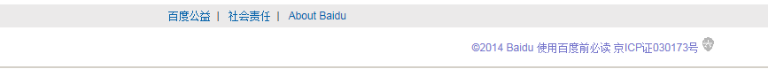
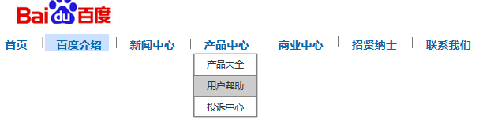
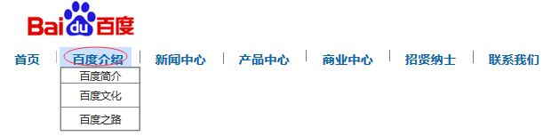

实验报告封面
课程名称： 系统原型设计与交互 课程代码： SM2008
任课老师： 杨 微 实验指导老师: 杨 微
学生姓名：
学号：
教学班：
递交日期：
签收人：
我申明，本报告内的实验已按要求完成，报告完全是由我个人完成，并没有抄袭行为。我已经保留了这份实验报告的副本。
申明人(签名):
实验报告评语与评分：
评阅老师签名：
实验报告封面
课程名称： 系统原型设计与交互 课程代码： SM2008
任课老师： 杨 微 实验指导老师: 杨 微
学生姓名：
学号：
教学班：
递交日期：
签收人：
我申明，本报告内的实验已按要求完成，报告完全是由我个人完成，并没有抄袭行为。我已经保留了这份实验报告的副本。
申明人(签名):
实验报告评语与评分：
评阅老师签名：
|
实验题目 |
实验8 百度门户导航菜单母版设计 |
||
|
实验地点及组别 |
UT303 1人/组 |
实验时间 | |
|
1实验目的 掌握母版的基本使用方法； 掌握母版3种拖放行为的使用方式。 掌握门户网站导航菜单母版的设计。 |
|||
|
二、实验环境（本实验的硬件和软件环境及使用仪器等） 硬件：PC电脑一台； 配置： win7系统，内存大于4G 硬盘250G及以上 软件：IE、Firefox、Google chrome 、Axure RP 8 |
|||
|
三、实验实现过程 实验内容： 请根据母版设计相关知识，完成百度门户导航菜单母版的设计。 1. 导航菜单母版布局设计，示例如下：
2. 网站Logo和版权母版布局设计，示例如下：
 3. 导航菜单母版交互设计，示例如下：  4. 导航菜单选中背景交互设计，示例如下：  实验步骤与结果截图： |
|||
|
四、实验结果分析与总结 注：必须写，这里填写你的实验达到的预期效果，是否按时完成，遇到哪些问题？如何解决的？还需要学习和提高的地方？下一步的计划和打算？给老师的建议和意见。写完自己的总结请把这段话删除） |
|||